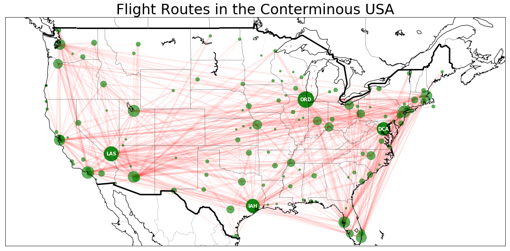

Flight Routes in USA
Contents
8. Flight Routes in USA#
Data: https://openflights.org/data.html
import pandas as pd
import networkx as nx
import matplotlib.pyplot as plt
from mpl_toolkits.basemap import Basemap as Basemap
import matplotlib.lines as mlines
%%bash
ls data
airport_df.csv
airports.dat
routes.dat
routes_df.csv
df_airport = pd.read_csv("data/airport_df.csv")
df_routes = pd.read_csv("data/routes_df.csv")
print(df_routes.columns)
print(df_routes.head())
df_airport = df_airport[(df_airport.Country == "United States") & (df_airport.Lat > 25) & (df_airport.Lat < 50) & (df_airport.Long > -130) & (df_airport.Long < -60)]
print(df_airport.head())
airports_in_us = df_airport['IATA'].values
df_airport_ix = df_airport.index.values
print(df_airport_ix)
df_routes = df_routes[(df_routes['Source Airport ID'].isin(df_airport_ix)) & (df_routes['Dest Airport ID'].isin(df_airport_ix) & df_routes['Source Airport'].isin(airports_in_us)) & (df_routes['Dest Airport'].isin(airports_in_us))]
df_routes = pd.DataFrame(df_routes.groupby(['Source Airport', 'Dest Airport']).size().reset_index(name='counts'))
counts = df_routes['Source Airport'].append(df_routes.loc[df_routes['Source Airport'] != df_routes['Dest Airport'], 'Dest Airport']).value_counts()
counts = pd.DataFrame({'IATA': counts.index, 'total_flight': counts})
pos_data = counts.merge(df_airport, on = 'IATA')
pos_data.to_csv("data/pos_data.csv",sep=",")
Index(['Unnamed: 0', 'Airline', 'Airline ID', 'Source Airport',
'Source Airport ID', 'Dest Airport', 'Dest Airport ID', 'Codeshare',
'Stops', 'equipment'],
dtype='object')
Unnamed: 0 Airline Airline ID Source Airport Source Airport ID \
0 0 2B 410 AER 2965.0
1 1 2B 410 ASF 2966.0
2 2 2B 410 ASF 2966.0
3 3 2B 410 CEK 2968.0
4 4 2B 410 CEK 2968.0
Dest Airport Dest Airport ID Codeshare Stops equipment
0 KZN 2990.0 NaN 0 CR2
1 KZN 2990.0 NaN 0 CR2
2 MRV 2962.0 NaN 0 CR2
3 KZN 2990.0 NaN 0 CR2
4 OVB 4078.0 NaN 0 CR2
ID Name City Country IATA ICAO \
3204 3416 Orlando Executive Airport Orlando United States ORL KORL
3213 3425 Laurence G Hanscom Field Bedford United States BED KBED
3220 3432 Oscoda Wurtsmith Airport Oscoda United States OSC KOSC
3221 3433 Marina Municipal Airport Fort Ord United States OAR KOAR
3222 3434 Sacramento Mather Airport Sacramento United States MHR KMHR
Lat Long Alt Timezone DST Tz database time zone type \
3204 28.545500 -81.332901 113 -5 A America/New_York airport
3213 42.470001 -71.289001 133 -5 A America/New_York airport
3220 44.451599 -83.394096 633 -5 A America/New_York airport
3221 36.681900 -121.762001 137 -8 A America/Los_Angeles airport
3222 38.553902 -121.297996 98 -8 A America/Los_Angeles airport
source
3204 OurAirports
3213 OurAirports
3220 OurAirports
3221 OurAirports
3222 OurAirports
[3204 3213 3220 ... 6996 6997 6998]
df_airport[ df_airport['IATA'] =='AAT' ]
| ID | Name | City | Country | IATA | ICAO | Lat | Long | Alt | Timezone | DST | Tz database time zone | type | source |
|---|
df_routes[ df_routes['Source Airport'] =='AAT' ]
| Source Airport | Dest Airport | counts |
|---|
graph = nx.from_pandas_edgelist(df_routes, 'Source Airport', 'Dest Airport', edge_attr=True)
plt.figure(figsize = (10,9))
nx.draw_networkx(graph)
# plt.savefig("./images/map_0.png", format = "png", dpi = 300)
plt.show()
plt.figure(figsize = (10,9))
m = Basemap(projection='merc',llcrnrlon=-180,llcrnrlat=10,urcrnrlon=-50,urcrnrlat=70, lat_ts=0, resolution='l',suppress_ticks=True)
<Figure size 720x648 with 0 Axes>
# pos_data = pd.read_csv("data/pos_data.csv")
# pos_data = pos_data.drop(['Unnamed: 0'],axis=1);
# pos_aer = pd.DataFrame([['AER', 0, '' , 43.4450,39.9439, ''],['KZN', 0, '' , 55.6086, 49.2984,''], ['ASF', 0, '' , 46.2870, 47.9999,''], ['MRV', 0, '' , 44.2178, 43.0877,''] ],columns = ['IATA', 'total_flight', 'Name', 'Lat', 'Long', 'ICAO'])
# pos_data = pd.concat([pos_aer,pos_data])
pos_data[pos_data['IATA'] == 'AAT']
| IATA | total_flight | ID | Name | City | Country | ICAO | Lat | Long | Alt | Timezone | DST | Tz database time zone | type | source |
|---|
mx, my = m(pos_data['Long'].values, pos_data['Lat'].values)
pos = {}
for count, elem in enumerate (pos_data['IATA']):
pos[elem] = (mx[count], my[count])
nx.draw_networkx_nodes(G = graph, pos = pos, node_list = graph.nodes(),node_color = 'r', alpha = 0.8, node_size = 100)
nx.draw_networkx_edges(G = graph, pos = pos, edge_color='g', alpha=0.2, arrows = False)
<matplotlib.collections.LineCollection at 0x10d67ada0>
crit = 90
graph = nx.from_pandas_edgelist(df_routes, source = 'Source Airport', target = 'Dest Airport', edge_attr = 'counts',create_using = nx.DiGraph())
# Set up base map
plt.figure(figsize=(15,20))
m = Basemap(
projection='merc',
llcrnrlon=-130,
llcrnrlat=25,
urcrnrlon=-60,
urcrnrlat=50,
lat_ts=0,
resolution='l',
suppress_ticks=True)
# import long lat as m attribute
mx, my = m(pos_data['Long'].values, pos_data['Lat'].values)
pos = {}
for count, elem in enumerate (pos_data['IATA']):
pos[elem] = (mx[count], my[count])
# draw nodes and edges and overly on basemap
nx.draw_networkx_nodes(G = graph, pos = pos, nodelist = [x for x in graph.nodes() if counts['total_flight'][x] >= crit],
node_color = 'g', alpha = 0.9,
node_size = [counts['total_flight'][x]*8 for x in graph.nodes() if counts['total_flight'][x] >= crit])
nx.draw_networkx_labels(G = graph, pos = pos, font_size=10, font_color = 'w', font_weight='bold',
labels = {x:x for x in graph.nodes() if counts['total_flight'][x] >= crit})
nx.draw_networkx_nodes(G = graph, pos = pos, nodelist = [x for x in graph.nodes() if counts['total_flight'][x] < crit],
node_color = 'g', alpha = 0.6,
node_size = [counts['total_flight'][x]*8 for x in graph.nodes() if counts['total_flight'][x] < crit])
nx.draw_networkx_edges(G = graph, pos = pos, edge_color = 'r', width = routes_us['counts']*0.75, alpha=0.06, arrows = False)
m.drawcountries(linewidth = 3)
m.drawstates(linewidth = 0.2)
m.drawcoastlines(linewidth=1)
# m.fillcontinents(alpha = 0.3)
line1 = mlines.Line2D(range(1), range(1), color="white", marker='o', markerfacecolor="red")
line2 = mlines.Line2D(range(1), range(1), color="white", marker='o',markerfacecolor="blue")
line3 = mlines.Line2D(range(1), range(1), color="green", marker='',markerfacecolor="green")
# plt.legend((line1, line2, line3), ('Large Airport > '+ str(crit) +' routes', 'Smaller airports', 'routes'), loc=4, fontsize = 'xx-large')
# plt.legend((line1, line2, line3), ('Large Airport > '+ str(crit) +' routes', 'Smaller airports', 'routes'), loc=4, fontsize = 'xx-large')
plt.title("Flight Routes in the Conterminous USA", fontsize = 30)
plt.tight_layout()
# plt.savefig("./images/networkx_basemap/map_3.png", format = "png", dpi = 300)
plt.show()
